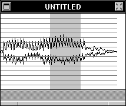

The Amplitude Grid

Sound windows may overlay an Amplitude Grid over any sound.
 The grid may have 20, 16, or 24 points (lines), or it may have a 20-decibel logarithmic curve. Displayed above is a 16-point Grid, for the word "Hello".
The grid may have 20, 16, or 24 points (lines), or it may have a 20-decibel logarithmic curve. Displayed above is a 16-point Grid, for the word "Hello".
To change or display the Grid, use the Marks Inspector: